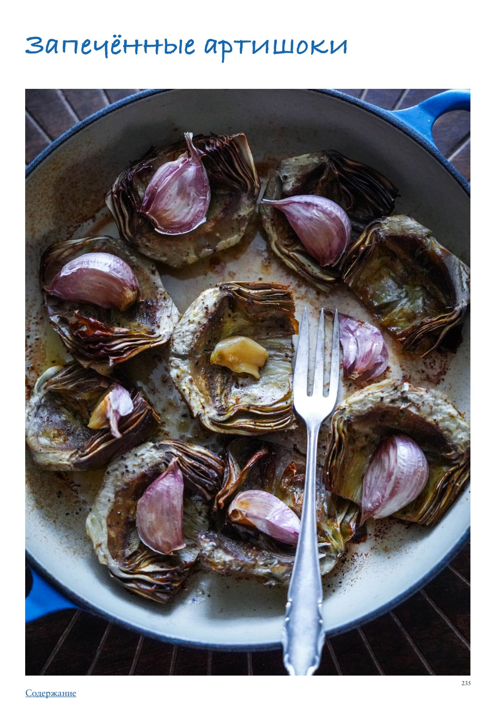

Для ароматизации можно добавить к артишокам при запекании целые веточки тимьяна или орегано.
Печеный чеснок тоже получается очень вкусным, неострым и мягким, сладковатым. Вы можете увеличить его количество по желанию. Можно выдавить его из шелухи и есть вместе с артишоками или перемешать с оливковым маслом и уксусом и использовать как дополнительную заправку.